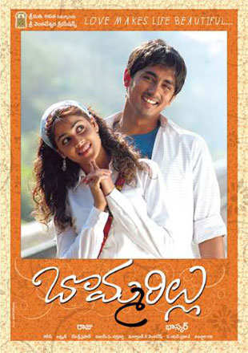

I had done my Bachelors in CSE and had work experience of about 6 years. I believe that my professional qualifications coupled with the opportunities to work in reputed companies reinforced my goals and instilled in me a strong desire to pursue my master's degree in Computer Science.
My all time favorite Bommarillu movie is a 2006 Telugu romantic comedy starring Siddharth, Genelia D'Souza, Prakash Raj, Jayasudha and others. The film questions how much hold parents
